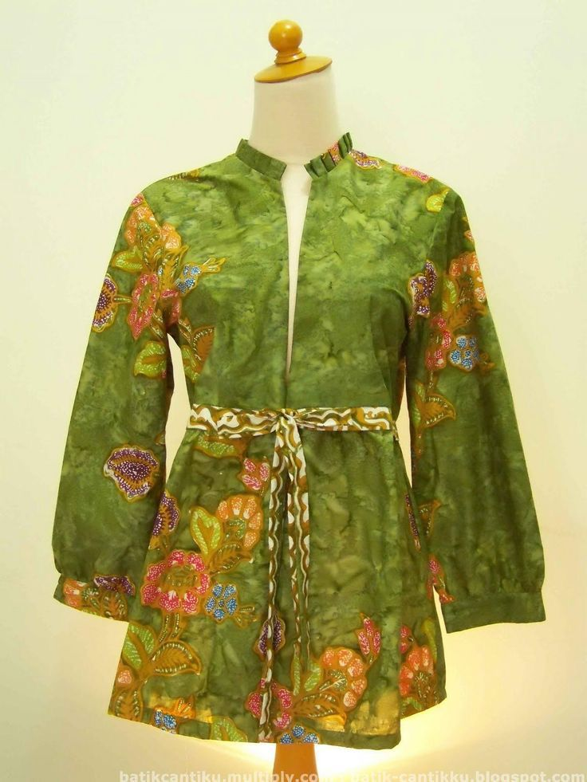
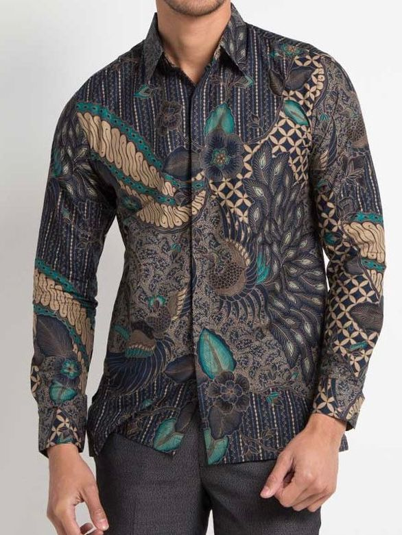
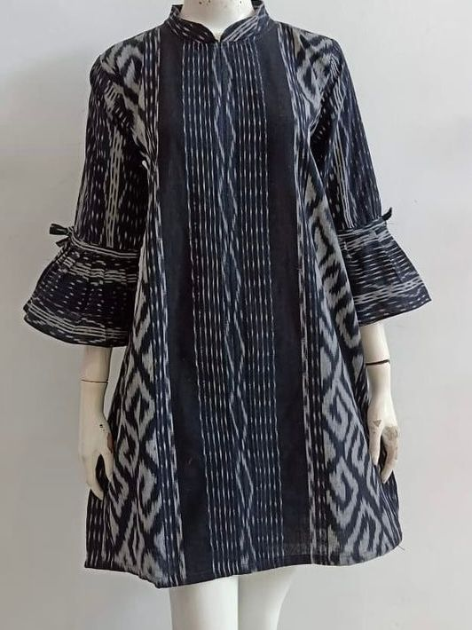

1. Baju Batik Wanita (Rp140.000)
Baju Batik Wanita Khas Motif Sidoarjo ini, terbuat dari kain berkualitas Murah tapi Tidak Murahan.

2. Baju Batik Pria (Rp160.000)
Baju Batik Wanita Khas Motif Sidoarjo ini, terbuat dari kain berkualitas Murah tapi Tidak Murahan.

3. Baju Batik Modern (Rp99.000)
Baju Batik Wanita Khas Motif Sidoarjo ini, terbuat dari kain berkualitas Murah tapi Tidak Murahan.